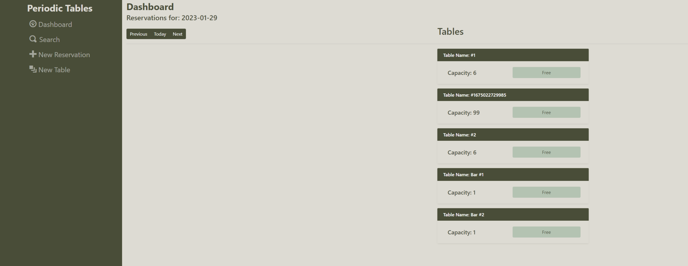
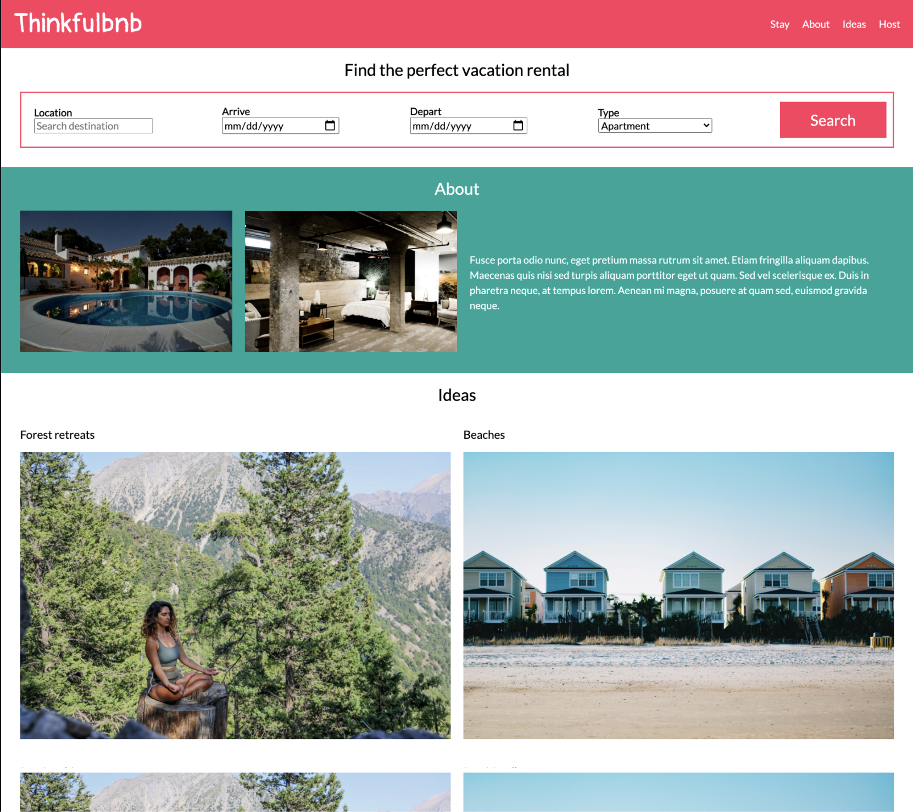
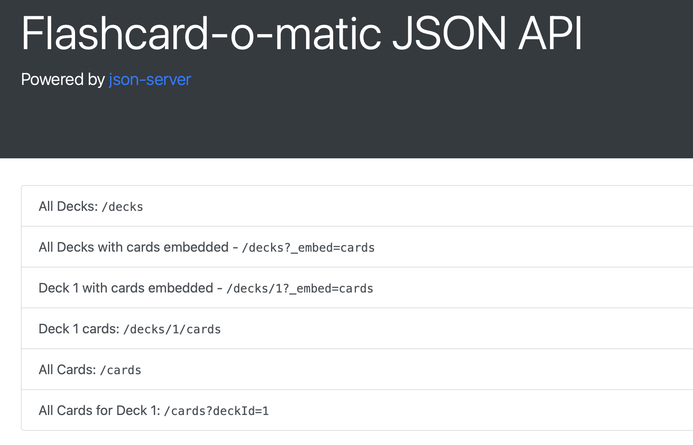

Restaurant Reservation System
This is a Restaurant Reservation System. This system allows the restaurant to create, update, view, and delete reservations, as well as seat customers at various tables within the restaurant.
View Project →Transforming complex challenges into streamlined solutions through robust engineering and proactive monitoring.
View My Work
This is a Restaurant Reservation System. This system allows the restaurant to create, update, view, and delete reservations, as well as seat customers at various tables within the restaurant.
View Project →
Thinkfulbnb is a vacation rental website that allows people to rent out their homes to people who are seeking short-term accommodations in that locale.
View Project →
Share a project that demonstrates innovation, complexity, or broad impact.
View Project →I am a software engineer specializing in developing robust, scalable solutions for complex systems.
Passion for Innovation: I drive continuous learning and innovation while optimizing performance and reliability in high-availability environments.
If you'd like to discuss a project, collaboration, or just say hello, feel free to reach out:
josh0371@gmail.com LinkedIn